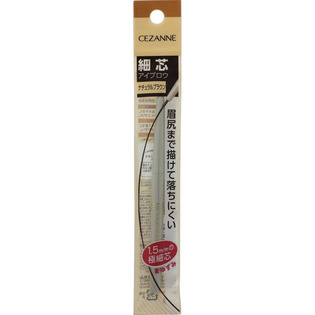
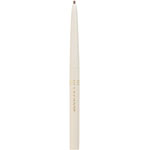

返回列表
产品名称： 細芯アイブロウ ０３ナチュラルブラウン

セザンヌ化粧品 細芯アイブロウ ０３ナチュラルブラウン ＿
メーカー セザンヌ化粧品
JANコード 4939553007203
商品の特徴
直径１．５ｍｍの細芯なので、眉尻の繊細な部分もきれいに仕上げます。
繰り出しタイプで、削らずに使え携帯に便利です。
成分・分量
【成分】
トリステアリン、ラノリン脂肪酸オクチルドデシル、水添ヒマシ油、ミツロウ、ポリエチレン、マイクロクリスタリンワックス、（＋／－）酸化鉄、タルク、酸化チタン、グンジョウ
用法及び用量
【使用方法】
●芯を２ｍｍくらいだし、眉毛１本１本を描くようにやさしく眉全体を整えてください。
●非常に細い芯となっておりますので、やさしいタッチでお使いください。